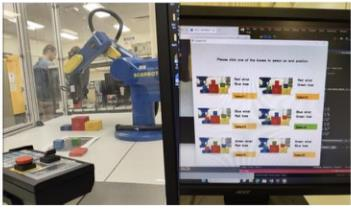

PROJECT MODULE 02
Hand-Eye Coordination
Machine vision and robot I/O integration for a hand-eye coordination task.
Task demonstration · 85 marks (HD)
Project overview
Integrated machine vision and robot-control logic for a university hand-eye coordination project.
My contribution
- Designed the subroutines and required Scorbase input/output relationships.
- Coded machine vision in C++ to assist serial communication.
Outcome
Demonstrated all tasks to a High Distinction standard, receiving 85 marks.
